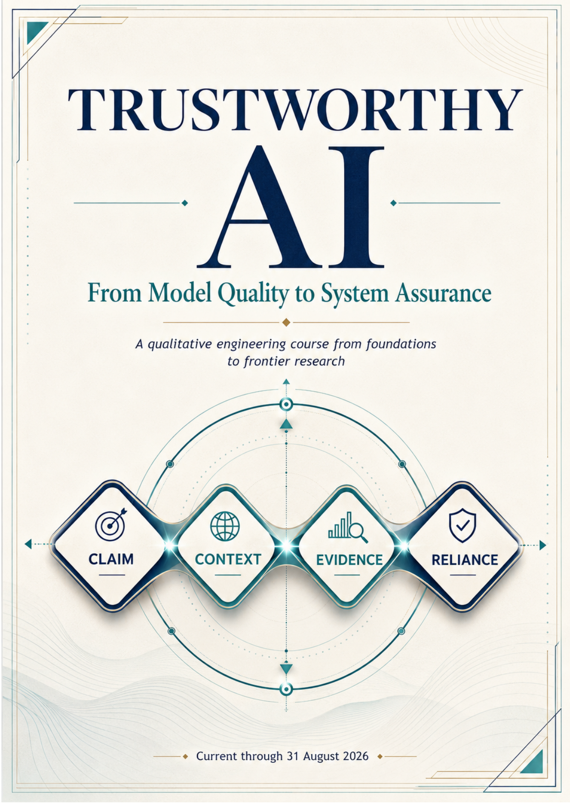

AI Systems & Infrastructure · Axiologic Research Editions
Trustworthy AI
From Model Quality to System Assurance
A qualitative engineering course for teams that must decide when an AI system is safe and warranted to rely on, not merely whether its model performs well in isolation.
From a score to a warranted reliance
Model quality is only one link in the chain. A trustworthy system makes a bounded claim, identifies its context, carries suitable evidence, and supports a form of reliance that remains proportionate to the consequences.
Assurance is an operating discipline
The book organizes assurance around claims, context, evidence, and reliance, then follows those through data, model behavior, interfaces, tools, people, monitoring, and incident response.
Trust is not a property stored inside a model. It is a relationship maintained by evidence, boundaries, and correction.
Designing for challenge
Rather than promising perfect safety, the course shows how to make uncertainty legible, preserve human authority where it matters, and improve a deployed system without hiding its history.